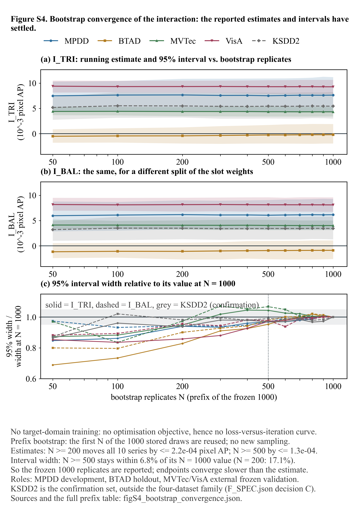
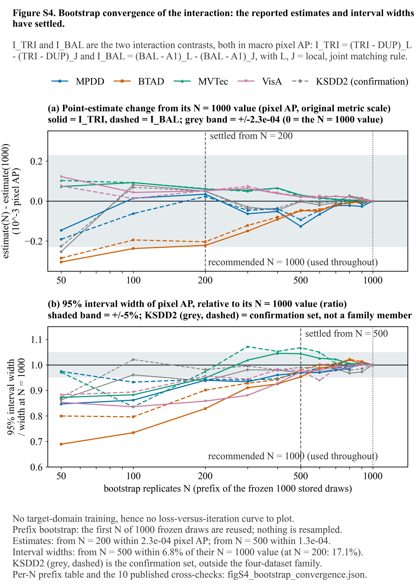
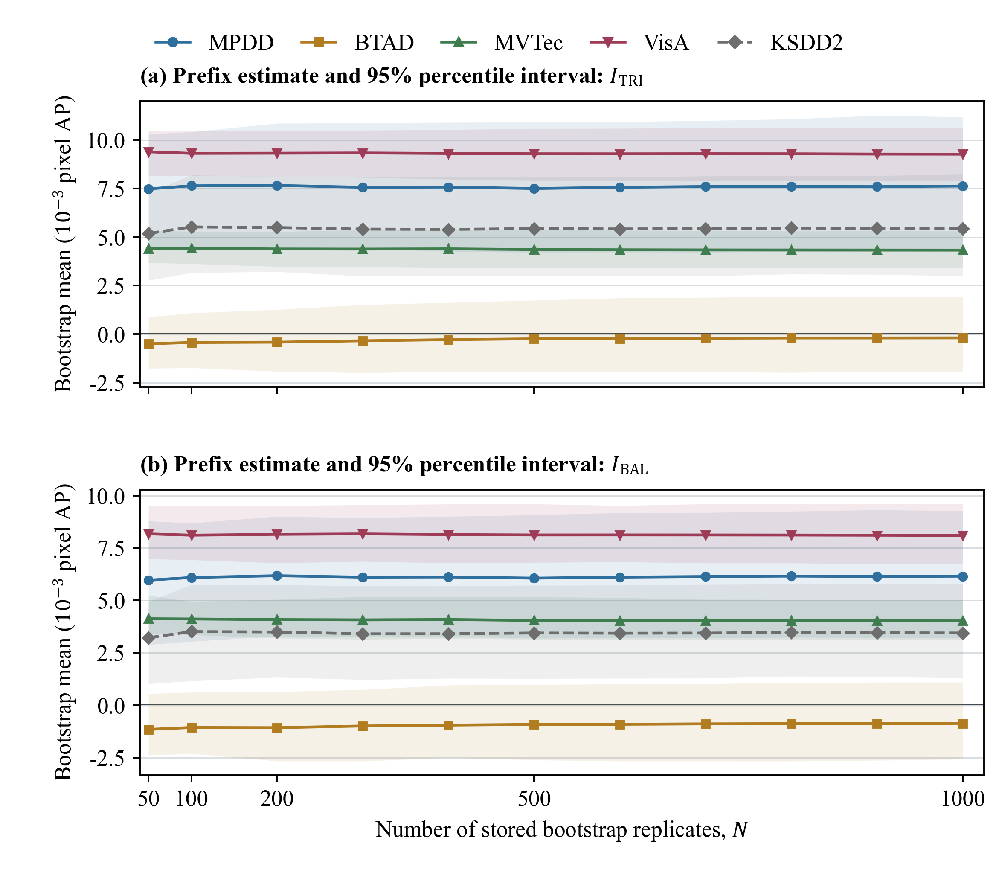
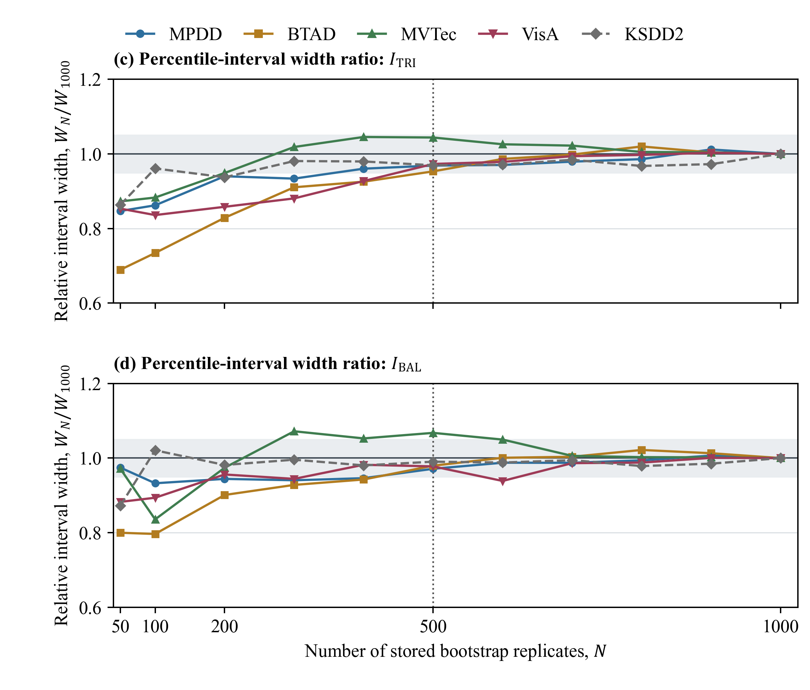

文件：docs/figures_reference_matching_20260914/preview_figS4_three_versions.html |
生成日期：2026-09-21 |
页面只引用本地相对文件（无外链、无 CDN） |
三版同源：都只使用已冻结的 bootstrap_samples.npz 前缀（N = 50→1000），未新增采样、未改任何数值。




| 项目 | v1 | v2 | stability（权威稿） | 判定 |
|---|---|---|---|---|
| 数据来源 | 三者同为 docs/figures_reference_matching_20260914/figS4_bootstrap_convergence.json 的冻结前缀表（stability 的脚本 L26 硬指向该 JSON） | 同源 | ||
| 面板数 | 3 | 2 | 4（分 2 页） | v2 最疏朗 |
| 页数 | 1 | 1 | 2 | — |
| PNG 像素 | 2342 × 3360 | 2342 × 3290 | 2342 × 2065 / 2342 × 1995 | 同 350 dpi / 17 cm 栏宽 |
| PNG 体积 | 665,788 B | 820,616 B | 490,497 B（两页合计） | 均在门限内 |
| 最小字号（印刷尺寸） | 11.50 pt / 73 | 11.50 pt / 61 | 11 pt（无断言） | v2 更稳 |
| 文本互压 / 出页面 / 压图 | 0 / 0 / 0 | 0 / 0 / 0（+4 处标注不与曲线相交） | 未断言 | v2 有门禁记录 |
| 数值断言（N = 1000 复算 vs 已发表表，容差 1e−8） | 10 行，最大偏差 2.4e−16 | 10 行，最大偏差 2.4e−16 | 10 行（由 validate_s4 断言） | 全部通过 |
| 头号数字 | N ≥ 500：点估计偏离 ≤ 1.3e−04 pixel AP、区间宽度偏离 ≤ 6.8%；N ≥ 200：宽度最差 17.1% | 三版一致 | ||
| 内容 | v1 | v2 | stability | 重复/互补 |
|---|---|---|---|---|
| 点估计的绝对值（水平 + 95% 带） | 有（(a)(b) 分对比量） | 无 | 有（(a)(b) 分对比量） | v1 与 stability 重复 |
| 点估计相对 N = 1000 的偏差 | 无 | 有（10 序列合一面板） | 无 | v2 独有 |
| 区间宽度比（W_N / W_1000） | 有（(c)） | 有（(b)，10 序列） | 有（(c)(d) 分对比量） | 三版都有，属重复内容 |
| N = 1000 渐近参考线 / 稳定点竖线 | 无 | 有（N = 200 与 N = 500） | 只有 ±5% 灰带与 N = 500 虚线（第 2 页） | v2 更直接支持正文阈值 |
| 配色可灰度辨认 | 否（(c) 只靠颜色） | 是（Okabe–Ito + 线型承载对比量 + 标记承载数据集） | 否（靠颜色 + 线型，标记仅区分数据集） | v2 更稳 |
| KSDD2 确认集语义 | 灰虚线 | 灰虚线 + 更细线 + 图例写 KSDD2 (confirmation) | 灰虚线（图注说明不入家族） | v2 更明确 |
assert_annotations_clear，并有 preview_figS4_v1_v2.html 的门禁留档；stability 版无此记录。依据：上表判定"互补"⇒ 按合并分支执行；不新绘图、不重算，直接复用两张已渲染 PNG（数值零改动）。
| 图 S4 | 采用哪张现成 PNG | 像素 | 内容 | 来源 |
|---|---|---|---|---|
| 第 1 页（收敛） | figures/figS4_bootstrap_convergence.png |
2342 × 3290 | (a) 点估计相对 N = 1000 偏差（10 序列）+ N ≥ 200 灰带；(b) 区间宽度相对变化（10 序列）+ ±5% 带 + N = 500 虚线 | 本目录 v2（复制入权威稿 figures/，同时带 .pdf） |
| 第 2 页（稳定性） | figures/figS4_bootstrap_stability.png |
2342 × 2065 | (a)(b) 前缀均值 + 95% 百分位区间带（I_TRI、I_BAL），绝对尺度 | 权威稿现成，位置与文件名不变 |
移入 figures/superseded/ |
figS4_bootstrap_stability_part2.png / .pdf |
2342 × 1995 | (c)(d) 区间宽度比 —— 与第 1 页 (b) 内容重复 | 去重后可回溯（不删） |
排版宽度取 16 cm（原 17 cm）：17 cm 时第 1 页图高 23.9 cm，加图注（≈ 2.5 cm）会超过可用页高 25.70 cm（实读模板 A4：页 21.00 × 29.70 cm，四边页边距 2.00 cm），会逼出"图与图注分页"；16 cm → 图高 22.5 cm，安全。 两页宽度统一 16 cm。
| 文件 | 改前 | 改后 |
|---|---|---|
scripts/paper_complete_teacher_review_20260920/figures.json 的 stability | parts = [stability, stability_part2]，无 width（默认 17） | parts = [convergence, stability]，width: 16；图注改为两页分述 |
docs/paper_complete_teacher_review_20260920/figures/ | figS4_bootstrap_stability{,_part2}.png | + figS4_bootstrap_convergence.png/.pdf；_part2.* → superseded/ |
docs/paper_complete_teacher_review_20260920/FIGURE_SLIDE_INDEX.json 第 20、21 条 | stability + stability_part2 | convergence + stability（与重跑 build_deck.mjs 会生成的样式一致） |
docs/paper_complete_teacher_review_20260920/图件与PPT页码索引.md 第 20、21 行 | stability + stability_part2 | convergence + stability |
已知连带影响：已交付的图件 PPT 第 20–21 页内嵌的是合并前的两页渲染（PPTX 内嵌位图，不受源文件移动影响）；本次未重出 PPT，故论文图 S4 与 PPT 第 20–21 页不再逐像素一致。重出方式：node scripts/paper_complete_teacher_review_20260920/figure_sources/build_deck.mjs（需本机 codex 运行时里的 @oai/artifact-tool）。